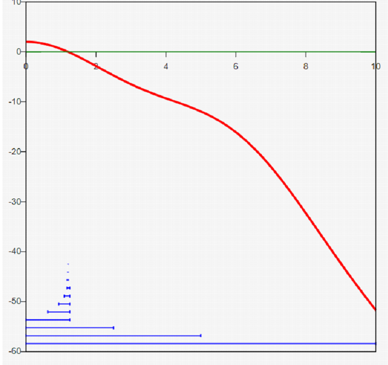
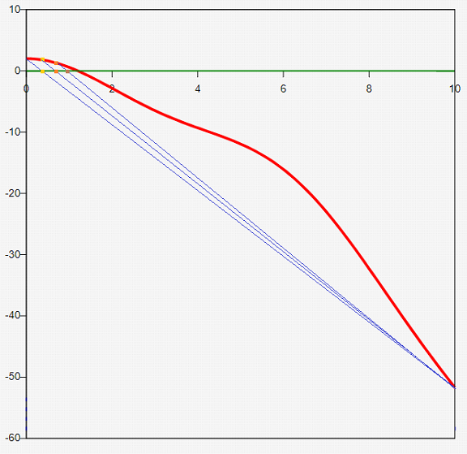
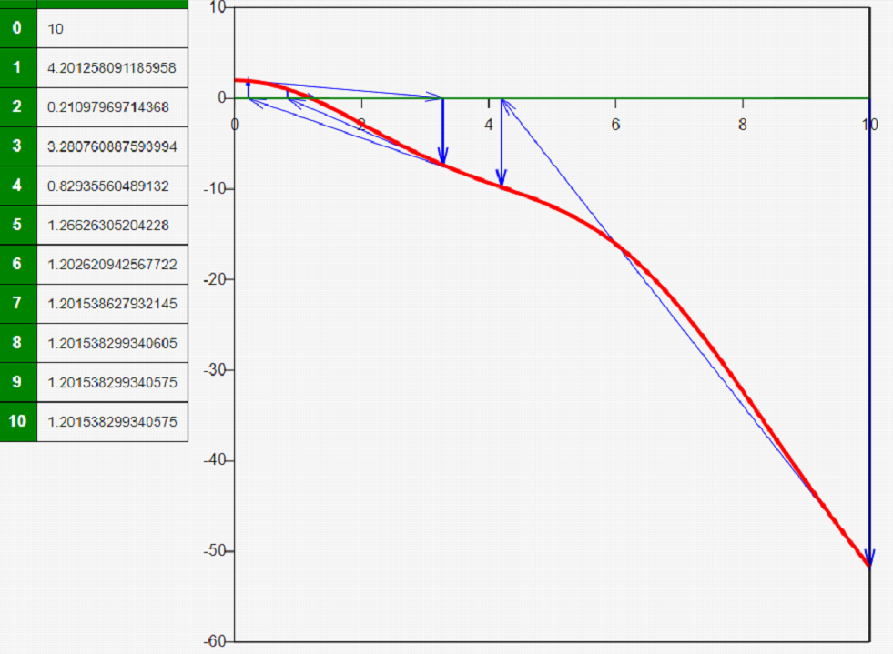

Szukanie miejsc zerowych funkcji jest jednym z podstawowych zastosowań metod numerycznych. Dla niektórych funkcji jest to trudne (wielomiany 3 i 4 stopnia), dla innych niemożliwe metodami numerycznymi. Podobnie jak z algorytmami sortowania, istnieje wiele metod których wydajność się różni. Ważne jest to, że im więcej wiemy o danej funkcji od strony analitycznej (jej kolejne pochodne itd.) tym lepiej możemy dopasować algorytm.
We wszystkich przykładach rozpatrzymy funckje w przedziałach (a, b), gdzie f(a)*f(b) jest mniejsze od zera, co gwarantuje wystąpienie miejsca zerowego w przedziale.
Do każdej metody dołączono plik w C++ na przykładzie funkcji f(x)=2cos(x)-0.5x^2
 MIEJSCA ZEROWE FUNKCJI
MIEJSCA ZEROWE FUNKCJI

PLIK W C++
Metoda bisekcji polega na policzeniu wartości na podzieleniu przedziału na dwa i wybrania tego, w którym znaki funkcji na krańcach są różne. Z każdą iteracją nasz przedział zawęża się tym samym o połowę. Przypomina to wyszukiwanie binarne.
Metoda bisekcji polega na policzeniu wartości na podzieleniu przedziału na dwa i wybrania tego, w którym znaki funkcji na krańcach są różne. Z każdą iteracją nasz przedział zawęża się tym samym o połowę. Przypomina to wyszukiwanie binarne.

PLIK W C++
Metoda siecznych polega na zastąpieniu danej funkcji w przedziale funkcją liniową, która przechodzi przez krańce przedziału. Jej miejsce zerowe jest odpowiednikiem połowy przedziału z poprzedniego przedziału. Dalsze postępowanie jest analogiczne. Kiedy w bisekcji mieliśmy pewność co do wielkości przedziału po n krokach, przy siecznych jest to uzależnione od badanej funkcji.
Metoda siecznych polega na zastąpieniu danej funkcji w przedziale funkcją liniową, która przechodzi przez krańce przedziału. Jej miejsce zerowe jest odpowiednikiem połowy przedziału z poprzedniego przedziału. Dalsze postępowanie jest analogiczne. Kiedy w bisekcji mieliśmy pewność co do wielkości przedziału po n krokach, przy siecznych jest to uzależnione od badanej funkcji.

PLIK W C++
Metoda Newtona potrzebuje do działania analitycznej znajomości pochodnej. Zamiast siecznych, szukamy punktu przecięcia stycznej do wykresu z osią OX. Ten zabieg pozwala nam zwiększyć prędkość algorytmu (ze zbieżności liniowej do kwadratowej), ale daje możliwość rozbieżności w niektórych punktach np. kiedy pochodna jest równa 0.
Metoda Newtona potrzebuje do działania analitycznej znajomości pochodnej. Zamiast siecznych, szukamy punktu przecięcia stycznej do wykresu z osią OX. Ten zabieg pozwala nam zwiększyć prędkość algorytmu (ze zbieżności liniowej do kwadratowej), ale daje możliwość rozbieżności w niektórych punktach np. kiedy pochodna jest równa 0.